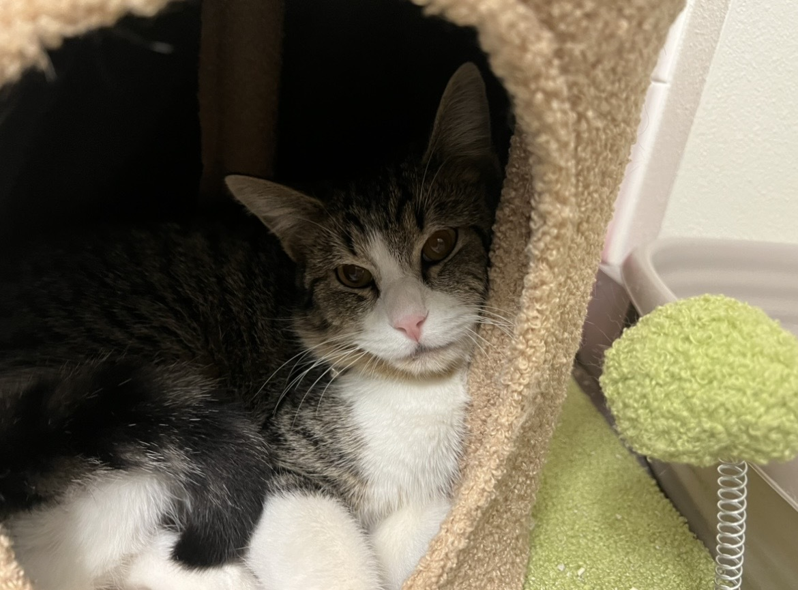
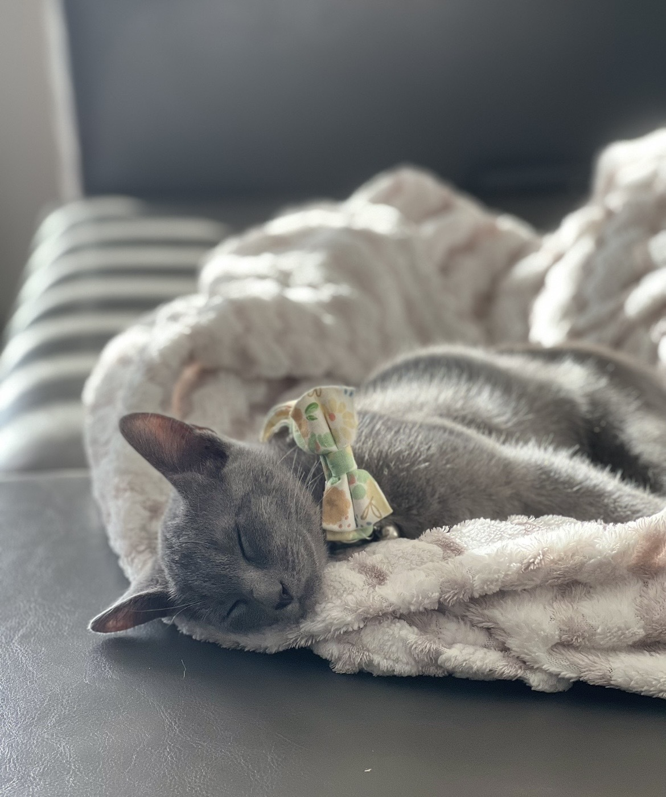
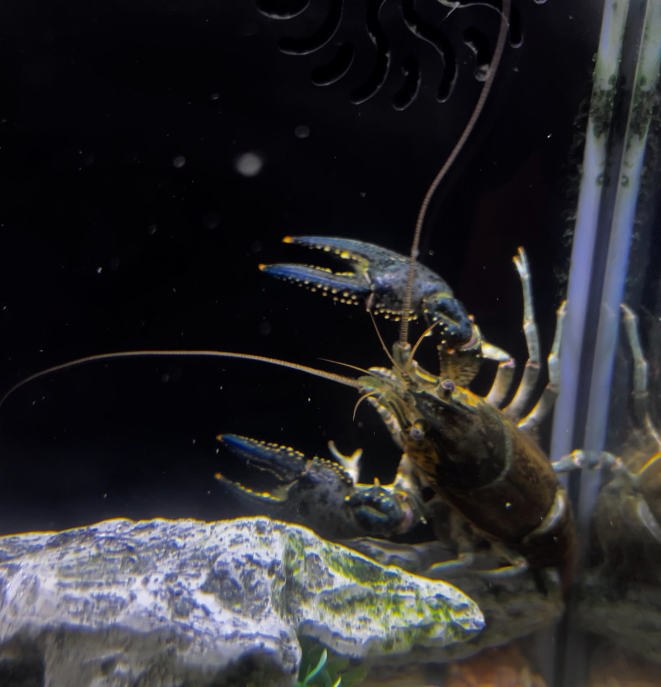
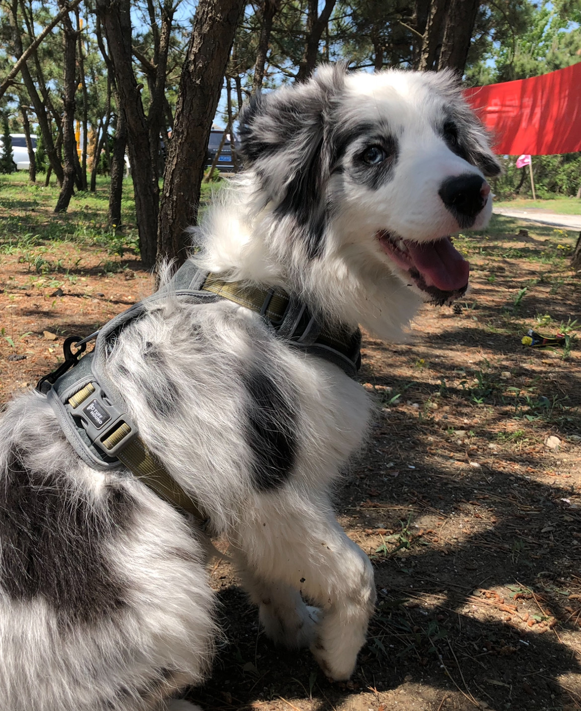

My Ph.D. program at the University of Texas at Arlington begin in Fall 2022. I hold bachelor's degrees in Biology and Computer Science from the University of North Carolina at Chapel Hill. My research interests focus on Gene Ontology, gene function prediction, drug discovery and development.
- Yuwei Miao, Yuzhi Guo, Hehuan Ma, Jingquan Yan, Feng Jiang, Rui Liao, Junzhou Huang. "GoBERT: Gene Ontology Graph Informed BERT for Universal Gene Function Prediction." Accepted at AAAI 2025.
- Yuwei Miao, Yuzhi Guo, Hehuan Ma, Jingquan Yan, Feng Jiang, Weizhi An, Jean Gao, Junzhou Huang. "UniEntrezDB: Large-scale Gene Ontology Annotation Dataset and Evaluation Benchmarks with Unified Entrez Gene Identifiers." arXiv, 2024, https://arxiv.org/abs/2412.12688.
- Yuwei Miao, Hehuan Ma, and Junzhou Huang. "Recent advances in toxicity prediction: applications of deep graph learning." Chemical Research in Toxicology 36.8 (2023): 1206-1226.
- Yuwei Miao, and Wenyi Luo. "Improve Generalization Ability of CNN by Data Augmentation and SE Block in Landmark Classification." 2022 14th International Conference on Computer Research and Development (ICCRD). IEEE, 2022.
- One paper accept by AAAI 2025!



